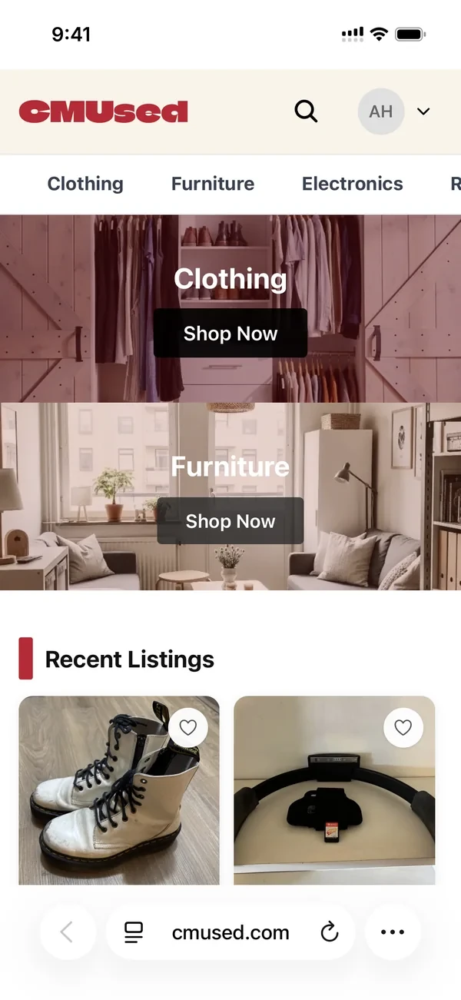
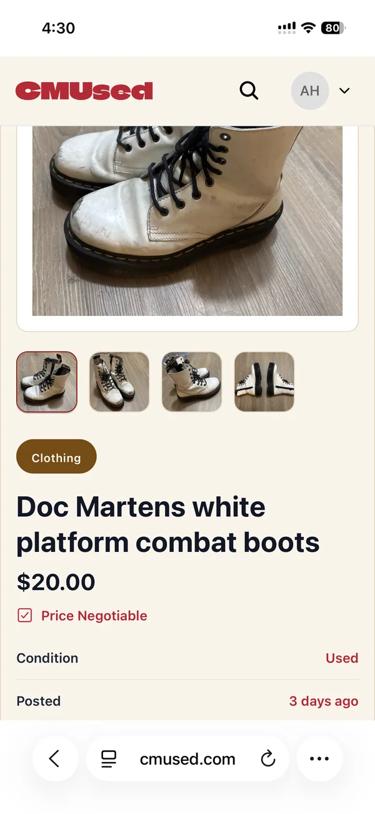

A second-hand marketplace for the Carnegie Mellon community, where students buy from and sell to each other in one place: browse by category, contact the seller directly, and list an item in three short steps.
Studio
BTG Product Studio
Role
Product designer
Type
Product design · Web · Mobile
Year
2026 — present
Original team
Bryan Huang, Annabelle Chow, Amy Cha, Andrea Guo, Yutong Zhen
01 / THE PROBLEM
Why CMUsed?
Students already trade with each other all the time, but it happens in scattered places: group chats, and general marketplaces built for strangers rather than classmates. Listings get buried, prices are guesswork, and it is hard to tell who is on the other end.
CMUsed gathers that trade into one place made for campus: listings sorted by what students actually move, like clothing, furniture, electronics and rideables, and a direct line to the person selling.
02 / THE BUYER JOURNEY
From browsing to a deal.
The site follows the moments a buyer goes through, and each screen carries only what that moment needs.
01Browse.
Two large ways in, clothing and furniture, then the most recent listings.
02Search and filter.
Results beside filters for price, quality and category, with sorting on the right.
03Decide.
The listing expands the card: more photos, price and whether it is negotiable, condition, when it was posted, who is selling, and one clear Contact Seller button.
04Sell.
Listing an item in three steps, basic info, pricing and preview, with AI help writing the description.
The card at a glance
Most of the time on CMUsed is spent scrolling through listings, so the card only carries what it takes to decide whether to look closer: a big photo, the item's condition, its category, the name and price, and the two things you can do next.
condition tag & share
primary product image
category
name & price
primary actions (contact & save)
From card to listing
Everything else waits for the listing page. Once a card catches someone's eye, the listing opens it up: every photo, the description, whether the price is negotiable, when it was posted and who is selling. The same order holds on a phone, where the pieces stack into a single column.

Mobile web · Home

Mobile web · Listing
03 / MY ROLEPRODUCT DESIGNER · 2026
What I work on.
I joined CMUsed as a product designer. My work is making the marketplace easier to use from end to end: how it flows, how it looks, what it can do, and where it lives.
01Redesigning user flow.
Redesigning and refining the paths people take, from browsing and searching to contacting a seller and listing an item.
02UI/UX.
Reworking how the website is designed: layouts, components and the details that make each page clear.
03Messaging function.
Improving what the site can do, including the messaging system buyers and sellers use to reach each other.
04Mobile app.
Developing a CMUsed app, so people can buy and sell from their phones. In progress.